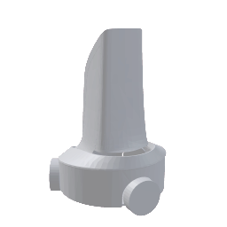
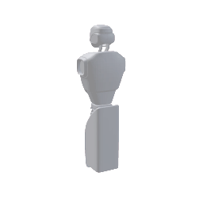
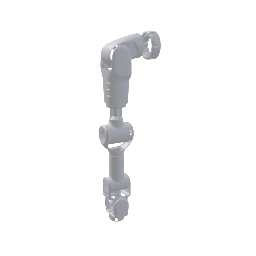
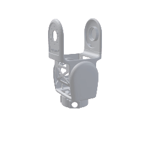

close
power_settings_new
急停
joystick
手柄
touch_appJob
center_focus_weak标定
info反馈
settings设置
logout退出
Job
close
当前Recipe:
测试123456
expand_more录制图
StartStop
Reset
PauseContinue
Start
Pause
Continue
Reset
Stop
自动化标定
close
鱼眼双目expand_more
鱼眼手眼expand_more
内窥镜双目expand_more
鱼眼左目到内窥镜左目expand_more
左手
计算新增点位
1
同步
移动
删除
收起点位 remove
右手
计算新增点位
1
同步
移动
删除
收起点位 remove
问题反馈
close
标记类型：
一般
严重
致命
问题描述：
请使用输入法/语音输入......
mic
问题上传
refresh
复位
左臂
右臂
TCP坐标系expand_more
TCP坐标系
基础坐标系
x: -10.12mm
y: -10.12mm
z: -10.12mm
Rx: -10.12mm
Ry: -10.12mm
Rz: -10.12mm

底盘
躯干
手臂
夹爪底盘躯干手臂夹爪
模式 底盘